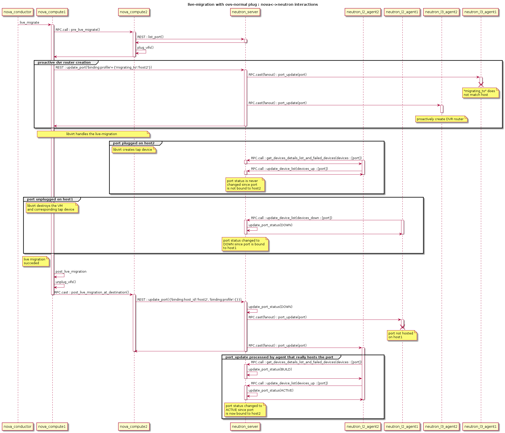
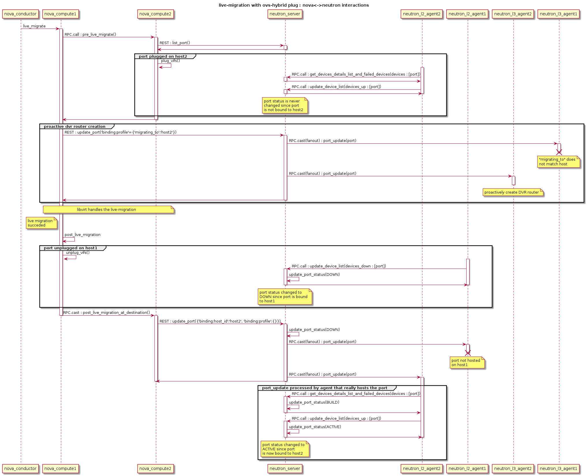

Live-migration¶
Let’s consider a VM with one port migrating from host1 with nova-compute1, neutron-l2-agent1 and neutron-l3-agent1 to host2 with nova-compute2 and neutron-l2-agent2 and neutron-l3agent2.
Since the VM that is about to migrate is hosted by nova-compute1, nova sends the live-migration order to nova-compute1 through RPC.
Nova Live Migration consists of the following stages:
Pre-live-migration
Live-migration-operation
Post-live-migration
Pre-live-migration actions¶
Nova-compute1 will first ask nova-compute2 to perform pre-live-migration actions with a synchronous RPC call. Nova-compute2 will use neutron REST API to retrieve the list of VM’s ports. Then, it calls its vif driver to create the VM’s port (VIF) using plug_vifs().
In the case Open vSwitch Hybrid plug is used, Neutron-l2-agent2 will detect this new VIF, request the device details from the neutron server and configure it accordingly. However, port’s status won’t change, since this port is not bound to nova-compute2.
Nova-compute1 calls setup_networks_on_hosts. This updates the Neutron ports binding:profile with the information of the target host. The port update RPC message sent out by Neutron server will be received by neutron-l3-agent2, which proactively sets up the DVR router.
If pre-live-migration fails, nova rollbacks and port is removed from host2. If pre-live-migration succeeds, nova proceeds with live-migration-operation.
Live-migration-operation¶
Once nova-compute2 has performed pre-live-migration actions, nova-compute1 can start the live-migration. This results in the creation of the VM and its corresponding tap interface on node 2.
In the case Open vSwitch normal plug, linux bridge or MacVTap is being used, Neutron-l2-agent2 will detect this new tap device and configure it accordingly. However, port’s status won’t change, since this port is not bound to nova-compute2.
As soon as the instance is active on host2, the original instance on host1 gets removed and with it the corresponding tap device. Assuming OVS-hybrid plug is NOT used, Neutron-l2-agent1 detects the removal and tells the neutron server to set the port’s status to DOWN state with RPC messages.
There is no rollback if failure happens in live-migration-operation stage. TBD: Error are handled by the post-live-migration stage.
Potential error cases related to networking¶
Some host devices that are specified in the instance definition are not present on the target host. Migration fails before it really started. This can happen with MacVTap agent. See bug https://bugs.launchpad.net/bugs/1550400
Post-live-migration actions¶
Once live-migration succeeded, both nova-compute1 and nova-compute2 perform post-live-migration actions. Nova-compute1 which is aware of the success will send a RPC cast to nova-compute2 to tell it to perform post-live-migration actions.
On host2, nova-compute2 sends a REST call “update_port(binding=host2, profile={})” to the neutron server to tell it to update the port’s binding. This will clear the port binding information and move the port’s status to DOWN. The ML2 plugin will then try to rebind the port according to its new host. This update_port REST call always triggers a port-update RPC fanout message to every neutron-l2-agent. Since neutron-l2-agent2 is now hosting the port, it will take this message into account and re-synchronize the port by asking the neutron server details about it through RPC messages. This will move the port from DOWN status to BUILD, and then back to ACTIVE. This update also removes the ‘migrating_to’ value from the portbindng dictionary. It’s not clearing it totally, like indicated by {}, but just removing the ‘migrating_to’ key and value.
On host1, nova-compute1 calls its vif driver to unplug the VM’s port.
Assuming, Open vSwitch Hybrid plug is used, Neutron-l2-agent1 detects the removal and tells the neutron server to set the port’s status to DOWN state with RPC messages. For all other cases this happens as soon as the instance and its tap device got destroyed on host1, like described in Live-migration-operation.
If neutron didn’t already processed the REST call “update_port(binding=host2)”, the port status will effectively move to BUILD and then to DOWN. Otherwise, the port is bound to host2, and neutron won’t change the port status since it’s not bound the host that is sending RPC messages.
There is no rollback if failure happens in post-live-migration stage. In the case of an error, the instance is set into “ERROR” state.
Potential error cases related to networking¶
Portbinding for host2 fails
If this happens, the vif_type of the port is set to ‘binding_failed’. When Nova tries to recreated the domain.xml on the migration target it will stumble over this invalid vif_type and fail. The instance is put into “ERROR” state.
Post-Copy Migration¶
Usually, Live Migration is executed as pre-copy migration. The instance is active on host1 until nearly all memory has been copied to host2. If a certain threshold of copied memory is met, the instance on the source get’s paused, the rest of the memory copied over and the instance started on the target. The challenge with this approach is, that migration might take a infinite amount of time, when the instance is heavily writing to memory.
This issue gets solved with post-copy migration. At some point in time, the instance on host2 will be set to active, although still a huge amount of memory pages reside only on host1. The phase that starts now is called the post_copy phase. If the instance tries to access a memory page that has not yet been transferred, libvirt/qemu takes care of moving this page to the target immediately. New pages will only be written to the source. With this approach the migration operation takes a finite amount of time.
Today, the rebinding of the port from host1 to host2 happens in the post_live_migration phase, after migration finished. This is fine for the pre-copy case, as the time windows between the activation of the instance on the target and the binding of the port to the target is pretty small. This becomes more problematic for the post-copy migration case. The instance becomes active on the target pretty early but the portbinding still happens after migration finished. During this time window, the instance might not be reachable via the network. This should be solved with bug https://bugs.launchpad.net/nova/+bug/1605016
Error recovery¶
If the Live Migration fails, Nova will revert the operation. That implies deleting any object created in the database or in the destination compute node. However, in some cases have been reported the presence of duplicated port bindings per port. In this state, the port cannot be migrated until the inactive port binding (the failed destination host port binding) has been deleted.
To this end, the script neutron-remove-duplicated-port-bindings has been
created. This script finds all duplicated port binding (that means, all port
bindings that point to the same port) and deletes the inactive one.
Note
This script cannot be executed while a Live Migration or a cross cell Cold Migration. The script will delete the inactive port binding and will break the process.
Flow Diagram¶
OVS Normal plug, Linux bridge, MacVTap, SR-IOV¶

OVS-Hybrid plug¶
The sequence with RPC messages from neutron-l2-agent processed first is described in the following UML sequence diagram
